THE MEGHASANDESA
P.
SRIRAMAMURTI
Department
of Sanskrit, Andhra University, Waltair
The
Meghasandesa of Kalidasa is a masterpiece of imagination. In this highly
imaginative short poem, replete with romantic imagery, the sequence of events,
as per the dates mentioned therein, has presented a problem to the
commentators. Various interpretations have been given and they have also been
discussed at length. In this small paper an attempt is made to suggest a fresh
approach to the problem, for the sympathetic consideration of sahridayas.
It
is said in the poem that the Yaksha saw first day of Ashadha:
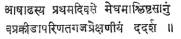
I-2
It
is also said later on that he sent the message when the month of Sravana came
in, i.e., when the rainy season set in (according to the usual interpretation).
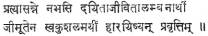
I-4
The
interval between the seeing of the cloud and the sending of the message is
rather inexplicable.
Vallabhadeva
in his Panjika favours the reading 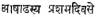 to
overcome this difficulty. He remarks that some read it as 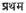 due
to an illusion caused by the similarity of the two letters 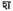 and 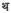 in
writing.
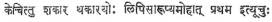
He
further observes: Since the rainy season is relevant to the context, the
reading which means ‘the first day’ is extremely confusing. But this reading of
Vallabhadeva is not usually accepted as correct. Kshemendra who is also a
Kashmirian, as Vallabhadeva, has only as
the reading (vide Suvrittatilaka). In this case according to the reading
preferred by Vallabhadeva and Kshemendra the remaining period of
the curse is three months and ten days only since the date of termination of
the curse is expressly stated as the eleventh day of the month of Kartika.
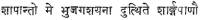
II-50
But
this period is referred to as four months in the same verse:
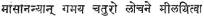
Thus
the reference to the period of four months amounts to an approximation for
three months and ten days.
Dakshinavartanatha
reads 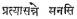 instead
of  and
explains it as 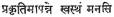 thereby
meaning that, after the Yaksha regained composure, he sent the
message through the cloud, on the first day of Ashadha itself. In this
case both the above-mentioned difficulties are got over easily. Also,
the interval spoken of as four months by Yakhsa is really four months and ten
days. Four months is a closer approximation to this period rather than to three
months and ten days.
and
explains it as 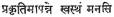 thereby
meaning that, after the Yaksha regained composure, he sent the
message through the cloud, on the first day of Ashadha itself. In this
case both the above-mentioned difficulties are got over easily. Also,
the interval spoken of as four months by Yakhsa is really four months and ten
days. Four months is a closer approximation to this period rather than to three
months and ten days.
The
widely accepted reading, however, is 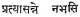 It has
also been invariably interpreted to mean–‘when the Sravana approached’–thereby
suggesting that the Yaksha sent the message when Sravana approached.
Mallinatha, here, considers the view of Vallabhadeva who
favours the reading and
remarks in the following manner. If the reading is 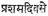 because
of its close proximity to Sravana, it can be had
even with the reading 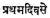 for
it is the proximity of the two months of Ashadha and Sravana
that is intended, rather than proximity of the days, since
it serves no specific purpose. Mallinatha says further that there is
sufficient time allowed for the Yaksha to think of sending a message to his
beloved in time to ward off any possible future misfortune or casuality– 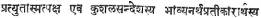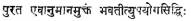–Mallinatha criticises the view of
Dakshinavartanatha also who reads as 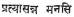 and
holds that the Yaksha was overpowered by love and was incapable of sending a
sage immediately.
Here
the interpretation that  means
only as Sravana was coming near, i.e., not exactly came, but
approaching–serves no purpose. After all, the idea in taking it to mean rainy
season is that the season is exciting to lovers. This purpose cannot be served
by the prospect of it alone. Then it should mean only that the future intensity
of the grief of his beloved due to the exciting rainy season is imagined by the
Yaksha and he thought of sending a message through the cloud.
means
only as Sravana was coming near, i.e., not exactly came, but
approaching–serves no purpose. After all, the idea in taking it to mean rainy
season is that the season is exciting to lovers. This purpose cannot be served
by the prospect of it alone. Then it should mean only that the future intensity
of the grief of his beloved due to the exciting rainy season is imagined by the
Yaksha and he thought of sending a message through the cloud.
None
of these interpretations seems to be satisfactory. I do not quite understand
why the rainy season is required to be mentioned here to serve as the excitant
as if the water-laden cloud will not do. After all it was the sight of the Ashadha
cloud that roused all the feelings in the mind of Yaksha. He stood before
it. Tears swelled in his eyes as his mind was filled with thoughts of his
beloved. He pondered for a long while. Then he wanted to send a message to his
beloved through the wandering cloud. Now, could any interval of days have
passed between the moment the Yaksha saw the cloud and the moment he decided to
send the message? Certainly not. Hence the possible interpretation of is,
in my opinion–as the cloud approached–taking the word nabhas to mean
‘cloud’. As the Yaksha was pondering over, the cloud came near him from the
slopes of the hill. Then he thought of sending a message. So he received the
cloud with the offering of fresh flowers. Thus the text of the message was
given to the cloud on the first day of Ashaadha, i.e., on the same day
when he saw it on the mountain slopes.
Now
a genuine doubt may arise. How are we to explain the descriptions of the future
action of the cloud on the way when it is said to shower rain and so on? When
the cloud is chosen as the messenger and its course to Alaka is being
described, naturally all the possible activities have been described not
excluding showering of rain. Moreover, though strictly the rainy season is yet
to come, first rains would start earlier. With that excuse all the qualities of
the rain, clouds have been associated with it by the poet. Further this
difficulty exists even in the case of Mallinatha’s interpretation.
It
may be asked: What about the excess of ten days in the calculation? One
suggestion is that the ten days might have been expected to be the time
required by the cloud to move to Alaka. Or it may be an approximation as said
before.
The
meaning of nabhas as the cloud is given in medini, and Apte, too,
gives it. Of course, the most popular meaning of the word is the sky. Taking
the word to mean this (the sky) in the most striking manner, still another
explanation may be given. Then nabhasi means
‘in the sky’. A Word tasmin must be supplied to be construed in
apposition with 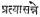 and the
locative absolute means as he came near in the sky from down the slopes. Indeed
the cloud that was referred to by the pronoun form tasya in the
previous stanza becomes the meaning of tasmin and again it is the same
as what is referred to afterwards in the same stanza by tasmai. This
solves all the problems of interpretation easily. In this explanation the
supply of tasmin may appear as far-fetched to some readers.
I
put these two alternative explanations for the consideration of the sahridayas.
My firm conviction is that, they are better than all the explanations
that have been given before, since they are simpler, and quite proper to the
imaginative susceptibilities of Kalidasa’s art.